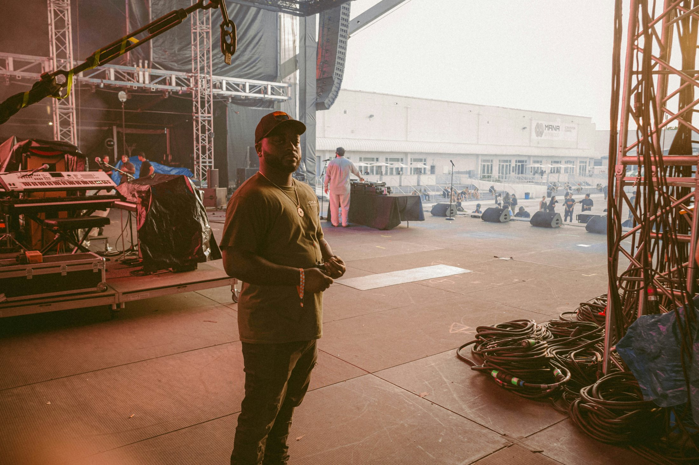
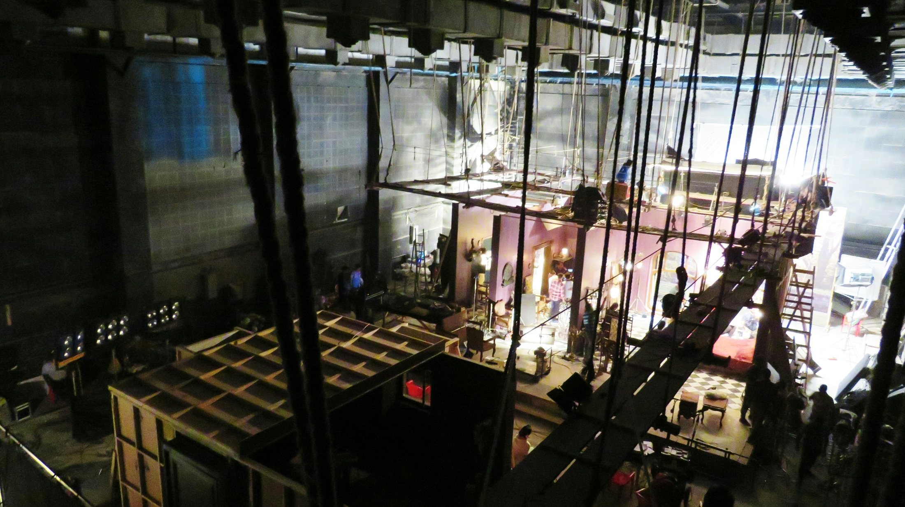

About Local 217
A Working Local, Built By The People Doing The Work
Local 217 is a stagehand union in the Rockford region. Our members work behind the scenes on live events, building the spaces and systems audiences usually never see.
The Local is its members. People show up, learn the craft, protect the standards, and take care of the crew.
Who We Are
The Work Comes First
Stagehand work asks a lot from people. Calls can be early, late, long, physical, technical, and different from one production to the next. Good crews depend on people communicating, paying attention, working safely, and knowing when to ask a question.
That is the kind of Local we are trying to keep building. Experienced hands pass along what they know. Newer hands learn by listening, asking questions, training, and putting in the work.


Our Journey
The Local Keeps Moving Because Members Keep Showing Up
Local 217's story is bigger than any one officer, crew, venue, or production. It lives in the people who have done the work, the people doing it now, and the people learning how to carry it forward.
Leadership
Who Runs The Union
Local leadership helps handle the business of the Local, but the Local does not belong to a handful of people. It belongs to the membership.
Where Our Members Work
Local 217 members work across live entertainment and event production in the Rockford region. That can include concerts, theater, arena events, casino entertainment, festivals, touring productions, sporting events, and special events. The work can look different depending on the production, venue, and department. What carries from one call to the next is the need for skill, communication, preparation, and a crew that works together.
How to join
Start With A Simple Interest Form
Interested workers can fill out the interest form, share their experience level, and ask questions about training, expectations, and getting started.
Filling out the form does not guarantee work or membership, but it is the first step in letting Local 217 know who you are and how to contact you.
Joining Path
1. Submit the interest form.
2. Talk with a Local 217 representative.
3. Learn expectations, safety basics, and available training.
4. Stay connected through calendars, meetings, and calls.